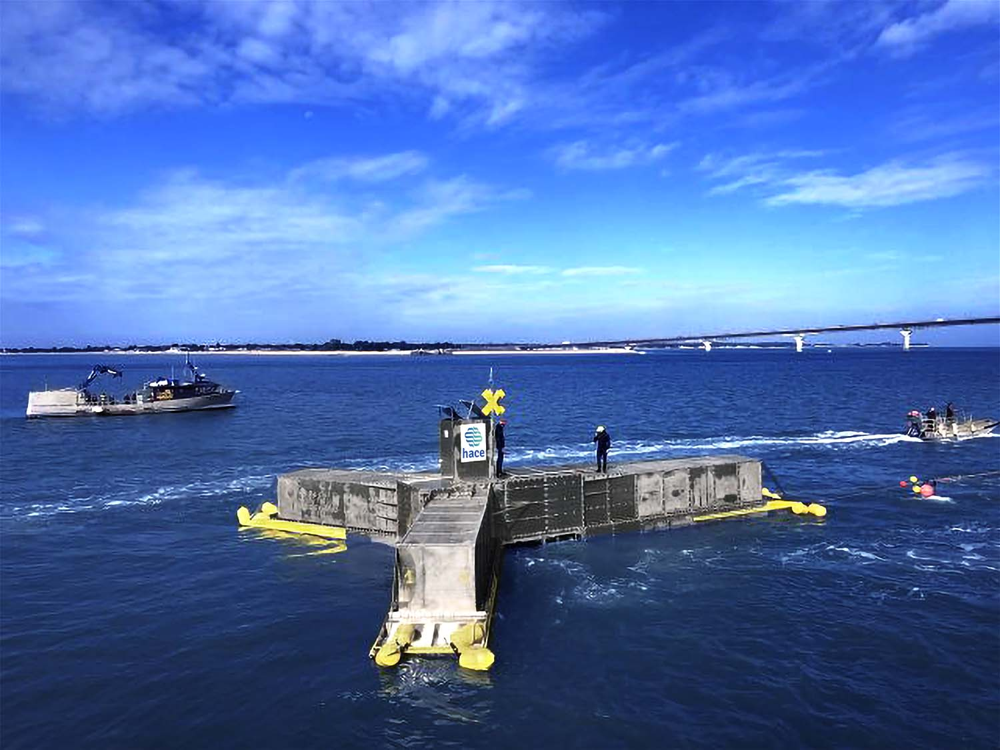
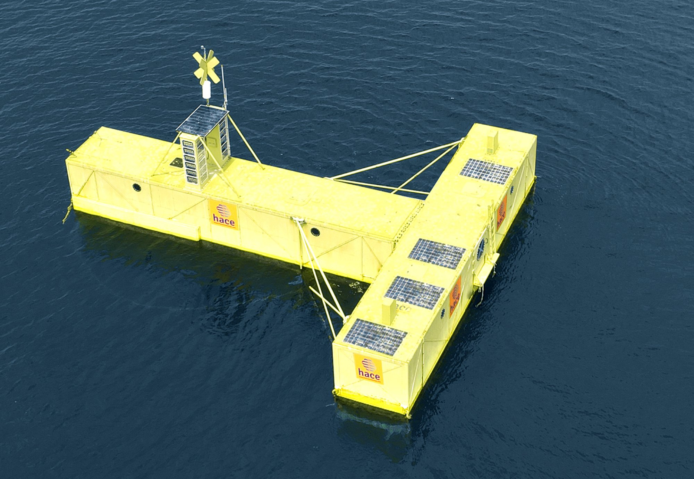
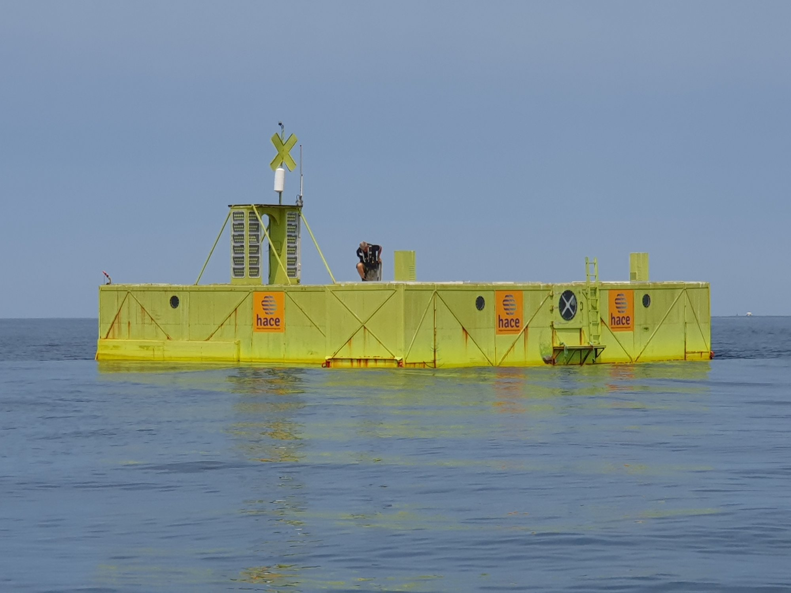
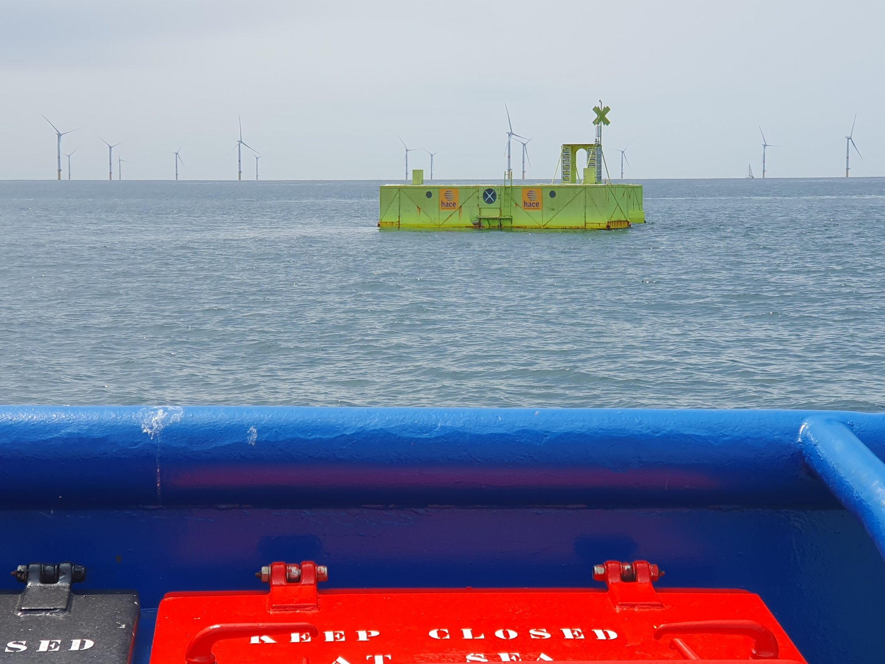

Sobre-dimensionado
por diseño.
Escalable. Acumulable.
Integrable.
HACE fue diseñado para garantizar un factor de capacidad máximo en todas las condiciones — y para adaptarse a cualquier ambición: del módulo único al gigavatio, de los usos combinados a los ecosistemas más complejos.
→ GW
Sobre-dimensionado
por diseño.
La turbina HACE está dimensionada a 1 MW nominal mientras que el sistema puede teóricamente producir 9 MW. No es una restricción — es una decisión estratégica deliberada.
Resultado: la turbina funciona constantemente a saturación, independientemente del estado del mar. Con 5 cm de oleaje como con temporal. Es este ratio el que garantiza un factor de capacidad del 50 al 90% — donde la eólica offshore no supera el 30%.
* Estimaciones de modelos internos y datos IRENA. El factor de capacidad final depende del emplazamiento y del oleaje local.


→ varios GW
Misma tecnología.
Todas las escalas.
Escalable
sin fricción.
Un solo módulo. Una sola tecnología. Un solo proceso de fabricación — en cualquier astillero del mundo, sin medios pesados.
Del demostrador a la isla diesel-dependiente, del proyecto costero al parque de varios GW: la misma pieza. Sin ruptura tecnológica. Sin nuevo riesgo industrial en cada etapa. Es la misma máquina que se multiplica.
unitario
costera
regional
offshore
Acero estándar. 95% reciclable. Fabricable en cualquier astillero. Sin componente exótico, sin logística pesada.
Los
usos se acumulan.
Una misma instalación HACE puede simultáneamente producir electricidad, proteger un litoral, alimentar un electrolizador y asegurar un puerto. Cada uso adicional mejora el ROI global sin coste adicional importante.
Es la lógica inversa de las demás energías: aquí, cuanto más se utiliza, más rentable resulta.


La pieza
de un
ecosistema más ambicioso.
HACE podría convertirse en la fuente de energía de un sistema que va más allá de la simple producción eléctrica. Las sinergias con actores complementarios ya existen — y las arquitecturas más ambiciosas están por construir.
ZESTAs — Transporte marítimo cero emisiones
Alianza mundial de más de 50 actores. HACE como proveedor de energía "Absolute Zero" para puertos y buques.
Alianza confirmada · 2026SHZ + H2X — Cadena completa de hidrógeno
Almacenamiento 20× más ligero (SHZ) + soluciones de uso (H2X). HACE proporcionaría la energía continua a la entrada de la cadena.
Asociación en curso · condicionalRedes híbridas — HACE + eólica + solar
La continuidad de producción HACE compensa la intermitencia de las otras fuentes. Una complementariedad natural que podría suprimir la necesidad de almacenamiento masivo.
Potencial identificado · a desarrollarData centers + refrigeración costera
Las grandes infraestructuras digitales costeras podrían alimentarse con energía estable HACE y utilizar el agua de mar para la refrigeración.
Uso emergente · a estructurarPlus votre projet est ambitieux,
plus HACE est pertinent.
Inversores, operadores, administraciones — hablemos del proyecto que tiene en mente.